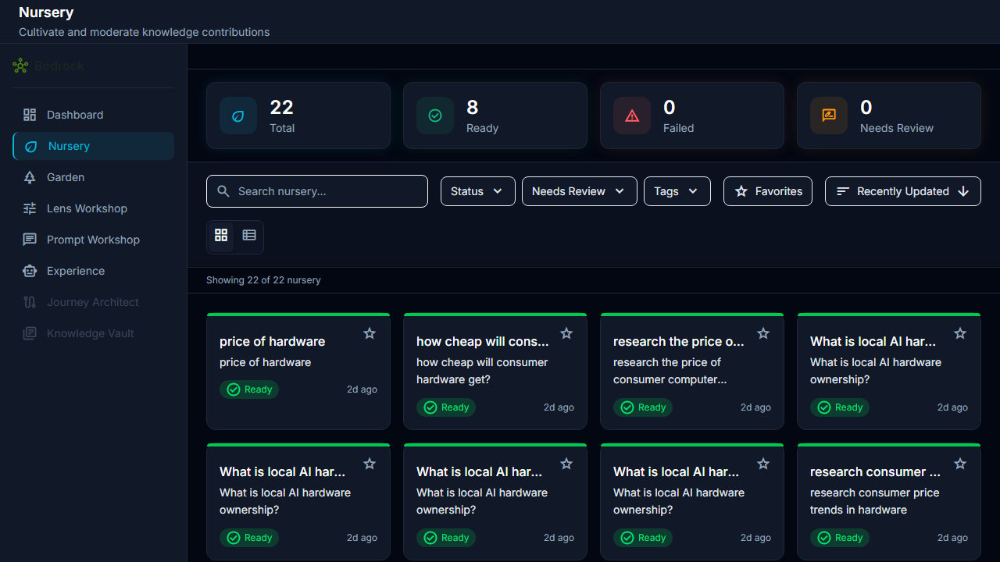
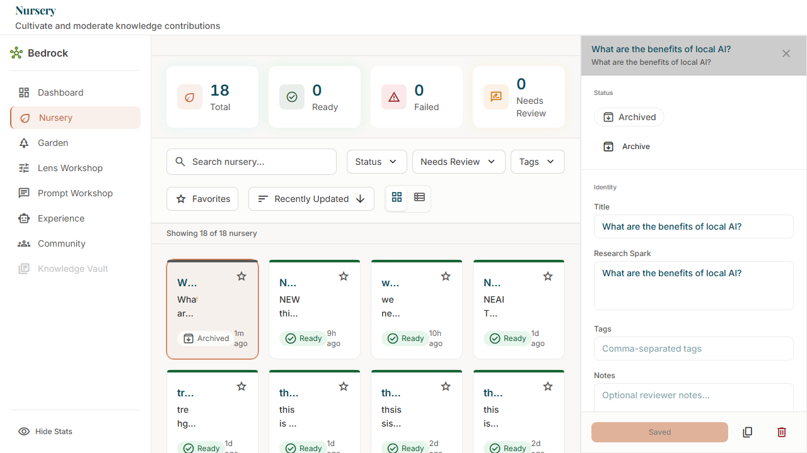
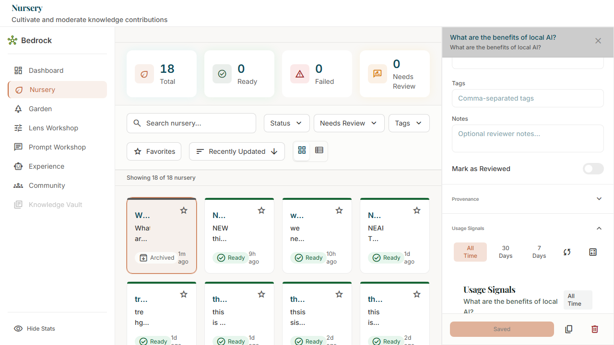
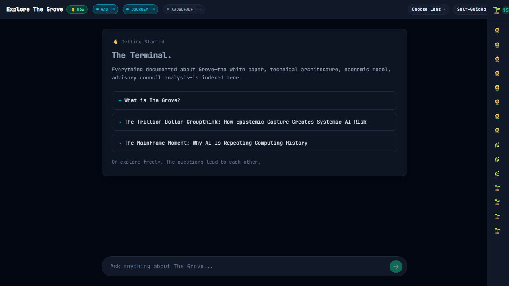

Visual Verification
E2E Test Screenshots

Epic 8: Nursery Console with sprout cards

Epic 8: Sprout Editor with signals section

Epic 8: Usage Signals panel expanded showing metrics

Epic 9: Explore page with signal instrumentation

Epic 9: Garden Tray component

Signal emission hook active (no console errors)